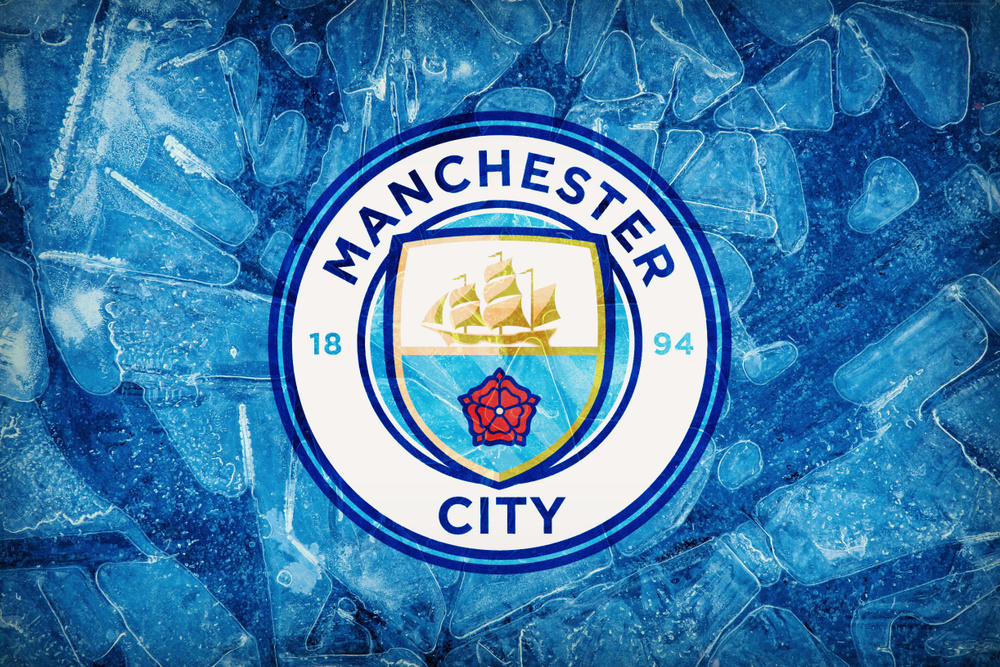
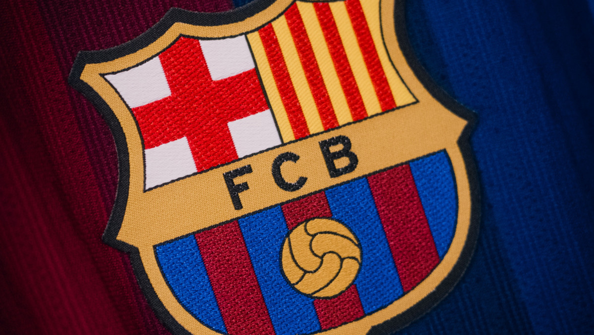
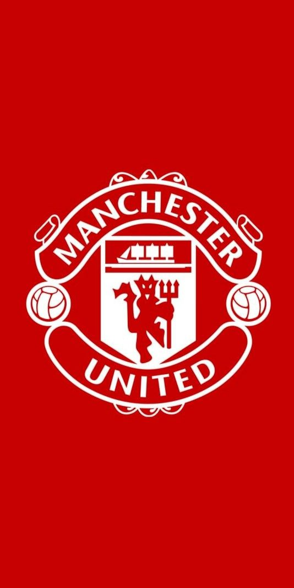

Пункт 4. Изображение, созданное в графическом редакторе:

Первый параграф. Здесь размещён текст, выделенный тегами <p> и </p>. Абзацы автоматически отделяются друг от друга благодаря отступам.
Второй параграф. Использование тега <br/> для переноса строки:
эта строка начинается с новой строки внутри того же абзаца.
Третий параграф. Ниже — гиперссылка на сайт Microsoft.
function hello() {
console.log("Привет, мир!");
}
for (let i = 0; i < 5; i++) {
document.write(i + " ");
}
🔴 Красный текст Arial, размер 5
🔵 Синий текст Times New Roman, размер 4
🟢 Зелёный текст Verdana, размер 6 — а это текст после закрытия </font>, он снова обычного цвета.
Изображения, расположенные последовательно:


| Это таблица | ||
|---|---|---|
| Это | ячейки | для |
| данных | в | таблице |
| Маркированный список (<ul>) | Нумерованный список (<ol>) | Список определений (<dl>) |
|---|---|---|
|
|
|
Заголовки от <h1> до <h6> задают структуру документа. <h1> — самый важный, <h6> — наименее важный.
Программирование — это творчество и логика одновременно. Оно позволяет создавать полезные продукты и решать сложные задачи.
Ниже размещено изображение с помощью тега <img>:
Маркированный список создаётся тегом <ul>, каждый элемент — <li>.
Нумерованный список создаётся тегом <ol>.
Список определений: <dl> — контейнер, <dt> — термин, <dd> — определение.
Внешняя ссылка: 🌐 MDN Web Docs
Ссылка на электронную почту: ✉️ Написать мне письмо
Внутренняя ссылка (якорь) на начало страницы: ⬆️ Наверх
Ссылка на файл: 📄 Скачать портфолио
| Язык | Назначение | Год создания |
|---|---|---|
| HTML | Разметка | 1991 |
| CSS | Стилизация | 1996 |
| JavaScript | Сценарии | 1995 |
Пример кода на Python:
def factorial(n):
if n == 0:
return 1
return n * factorial(n - 1)
print(factorial(5)) # 120
Тег <hr> вставляет горизонтальную разделительную линию.
© 2026. Практическая работа № 1. Основы разметки HTML 🎓